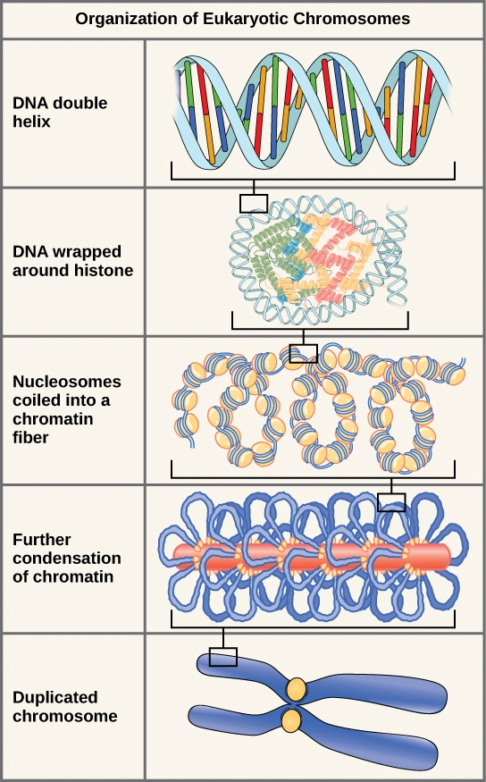

01
Vitrine da feira
O projeto e as pessoas
Conheça a proposta da equipe, veja os registros da preparação e da apresentação, assista aos vídeos e encontre as informações da feira.
Entrar na vitrine →Genética: como a ciência explica a vida e transforma o futuro.
Uma exposição sobre as diferenças biológicas entre pessoas e sobre como a ciência investiga essas diferenças.

O site reúne o registro do trabalho da turma e o apoio visual usado durante a apresentação. A exposição acompanha a explicação dos apresentadores; não pretende substituir a conversa com a equipe.
Conheça a proposta da equipe, veja os registros da preparação e da apresentação, assista aos vídeos e encontre as informações da feira.
Entrar na vitrine →Uma sequência de núcleos científicos, com explicações, figuras, diagramas e ampliações para apoiar a apresentação presencial.
Explorar os núcleos →As imagens são escolhidas para mostrar estruturas e mecanismos reais. Amplie as figuras para observar detalhes e acompanhe as legendas durante a apresentação.
Diferenças genéticas podem contribuir para diferenças biológicas, mas a genética não explica sozinha a pessoa. Regulação, desenvolvimento, ambiente e história de vida também importam.